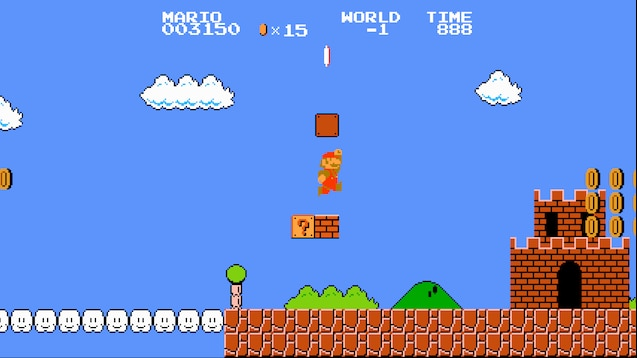
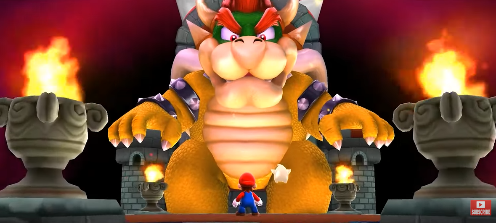

A franquia Mario é desenvolvida e publicada pela Nintendo, uma das principais empresas da indústria de videogames.
A franquia Mario tem uma série extensa de jogos, e é impossível listar todos eles aqui. No entanto, listaremos alguns dos jogos mais significativos e suas datas de lançamento:
A franquia Mario possui centenas de jogos, incluindo títulos principais, spin-offs e jogos para dispositivos móveis.
A lore de Mario gira em torno de Mario, um encanador italiano, e seu irmão Luigi, que embarcam em aventuras para resgatar a Princesa Peach do vilão Bowser. O Reino dos Cogumelos é o cenário principal, e está repleto de personagens icônicos, como Toad e Yoshi.
Mario: O protagonista, conhecido por seu icônico macacão vermelho.
Luigi: O irmão de Mario, muitas vezes acompanhando-o em suas aventuras.
Princesa Peach: A princesa do Reino dos Cogumelos, frequentemente sequestrada por Bowser.
Bowser: O principal antagonista, um grande réptil que está sempre tramando planos para dominar o Reino dos Cogumelos.
Toad: Um ajudante leal de Peach e Mario.
Yoshi: Um dinossauro amigo de Mario que muitas vezes o auxilia em suas jornadas.
Os jogos da franquia Mario variam em gênero e estilo de jogo. Alguns são plataformas 2D, outros são jogos de plataforma 3D, alguns são jogos de corrida, e outros são jogos de esportes. A série é conhecida por seus níveis criativos, jogabilidade envolvente e mundos coloridos.
A franquia Mario teve várias adaptações em filmes e séries animadas. Uma das adaptações mais conhecidas é o filme "Super Mario Bros." lançado em 1993, embora tenha sido criticado por sua qualidade. Além disso, houve séries animadas como "The Super Mario Bros. Super Show!" em 1989, sem contar o mais recente filme "Super Mario Bros. O Filme" de 2023, que alcançou uma bilheteria 1,36 bilhão de dólares.
Mario é um dos personagens mais icônicos da história dos videogames e tornou-se um símbolo da indústria.
O jogo "Super Mario Bros." foi um dos primeiros a popularizar os videogames em todo o mundo.
Mario também apareceu em jogos de corrida, como "Mario Kart", e em jogos esportivos, como "Mario Tennis" e "Mario Golf".
A franquia Mario tem sido influente na cultura popular, com músicas, memes e paródias sendo criados em sua homenagem ao longo dos anos.
Ricardo Desenvolvimentus™ 2023. Todos os direitos no seu rabo.